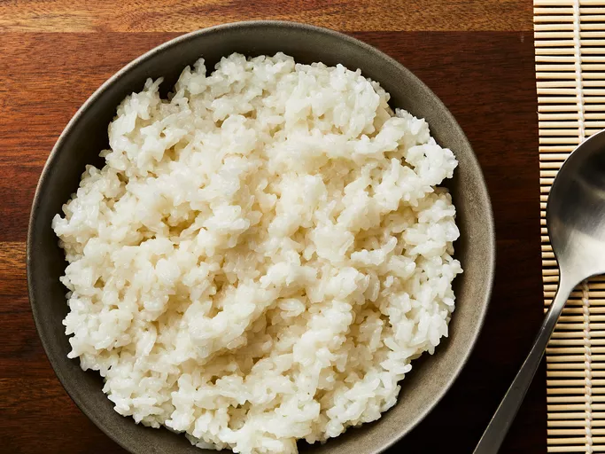

Rice

Ingredients
- 2 cups uncooked sushi rice
- 2 cups water
- ¼ cup rice wine vinegar or to taste
- ¼ cup white sugar or to taste
- 1 tablespoon vegetable oil
- 1 teaspoon salt or to taste
STEPS
- Gather all ingredients.
- Rinse rice under cold water in a strainer until water runs clear.
- Combine rice and water in a saucepan over medium-high heat; bring to a boil. Reduce heat to low, cover, and cook for 12 minutes. Remove from heat; let stand, covered, until tender, 10 minutes more. The rice will continue to steam. Remove lid; let rice cool.
- Meanwhile, combine rice wine vinegar, sugar, oil, and salt in a small saucepan over medium heat; cook until sugar has dissolved. Allow to cool.
- Stir vinegar mixture into rice. It may look wet at first, but keep stirring; rice will dry as it cools.
- Enjoy!